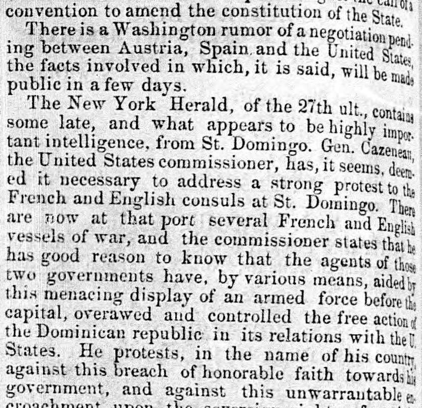
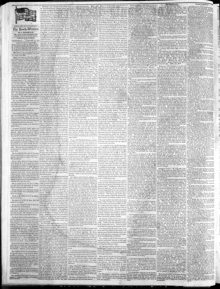

See the full pageVer la página completaTIe are now at that port several French and Englis vesselsHay ahora en ese puerto varios buques franceses e ingleses
According to the excerpt, United States commissioner Gen. C.eneae addressed a strong protest to the French and English consuls at St. Domingo regarding the presence of several French and English vessels of war. The commissioner stated that the agents of these two governments used an armed force display to overawe and control the Dominican Republic, and he protested this action as a breach of honorable faith and an encroachment upon the sovereign rights of an independent American power.Conforme al fragmento, el enviado de Estados Unidos, general Cazneau [consignado como C.eneae], libró una formal protesta a los cónsules francés y británico en Santo Domingo ante la estancia de varias naves de guerra de sus naciones. El comisionado imputaba a dichos agentes valerse de una ostentación armada para intimidar y dominar a la República Dominicana, protestando contra semejante proceder por constituir quebranto a la lealtad internacional y atropello a las prerrogativas soberanas de una potencia americana independiente.
FULL TEXT:TRADUCCIÓN:
The New York Herald, of the 27th ult., contains some late, and what appears to be highly important intelligence, from St. Domingo. Gen. Cazeneau, the United States commissioner, has, it seems, deemed it necessary to address a strong protest to the French and English consuls at St. Domingo. There are now at that port several French and English vessels of war, and the commissioner states that he has good reason to know that the agents of those two governments have, by various means, aided by this menacing display of an armed force before the capital, overawed and controlled the free action of the Dominican republic in its relations with the U. States. He protests, in the name of his country, against this breach of honorable faith towards his government, and against this unwarrantable encroachment upon theEl New York Herald, del 27 del pasado, contiene alguna inteligencia reciente, y que parece ser sumamente importante, de Santo Domingo. El General Cazeneau, el comisionado de los Estados Unidos, ha, parece, juzgado necesario dirigir una fuerte protesta a los cónsules francés e inglés en Santo Domingo. Hay ahora en ese puerto varios buques de guerra franceses e ingleses, y el comisionado declara que tiene buenas razones para saber que los agentes de esos dos gobiernos han, por varios medios, ayudados por esta exhibición amenazante de una fuerza armada ante la capital, intimidado y controlado la libre acción de la república dominicana en sus relaciones con los Estados Unidos. Protesta, en nombre de su país, contra esta violación de la fe honorable hacia su gobierno, y contra esta usurpación injustificable sobre la
The South-Western. Shreveport, La., January 17, 1855.
See the original at the Library of CongressVer el original en la Biblioteca del Congreso
Published by: L. Dillard & Co.Publicado por: L. Dillard & Co.
Edition: Edition 1Edición: edición 1
Page: 2Página: 2
Frequency: weekly (1852–1870)Frecuencia: semanal (1852–1870)
Collection: Chronicling America, Library of CongressColección: Chronicling America, de la Biblioteca del Congreso
LCCN: sn83016483LCCN: sn83016483
ISSN: 2334-5993ISSN: 2334-5993
OCLC: 9864985OCLC: 9864985
Rights: public domain, according to the Library of CongressDerechos: dominio público, según la Biblioteca del Congreso